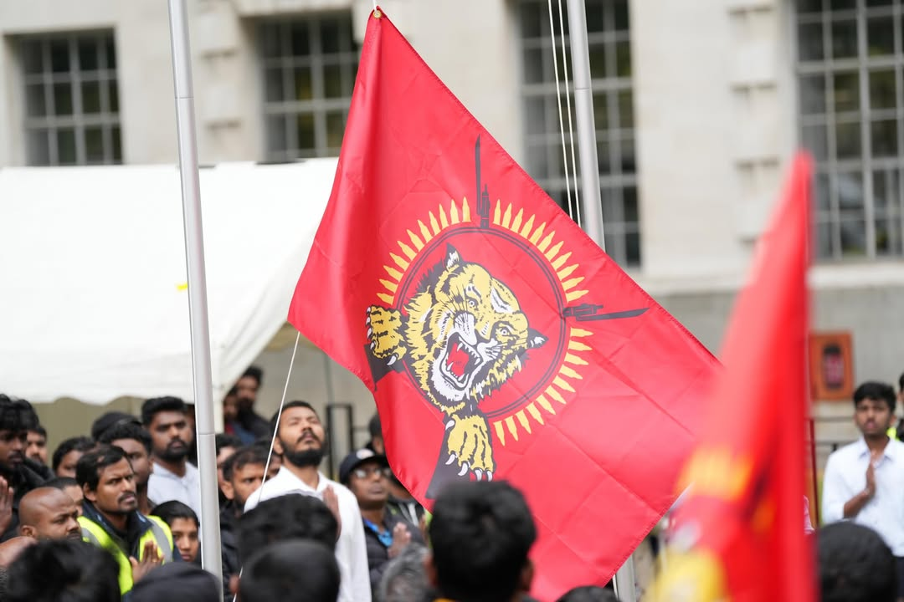
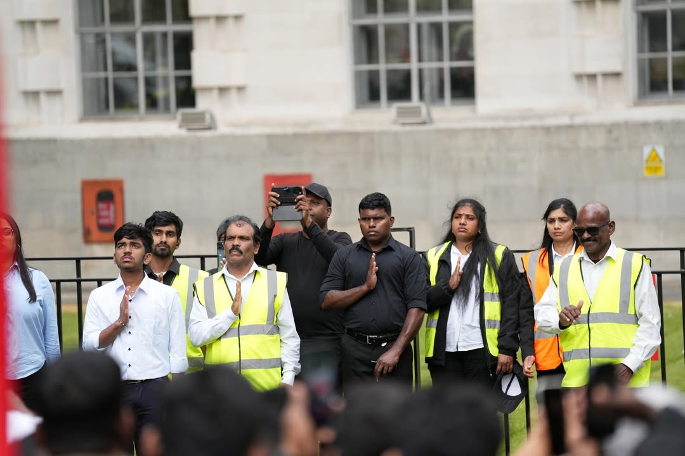
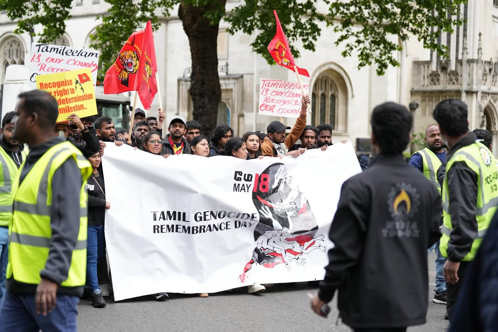
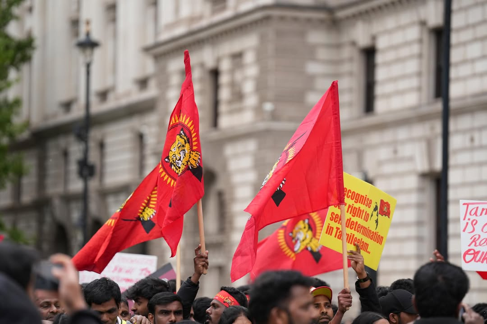
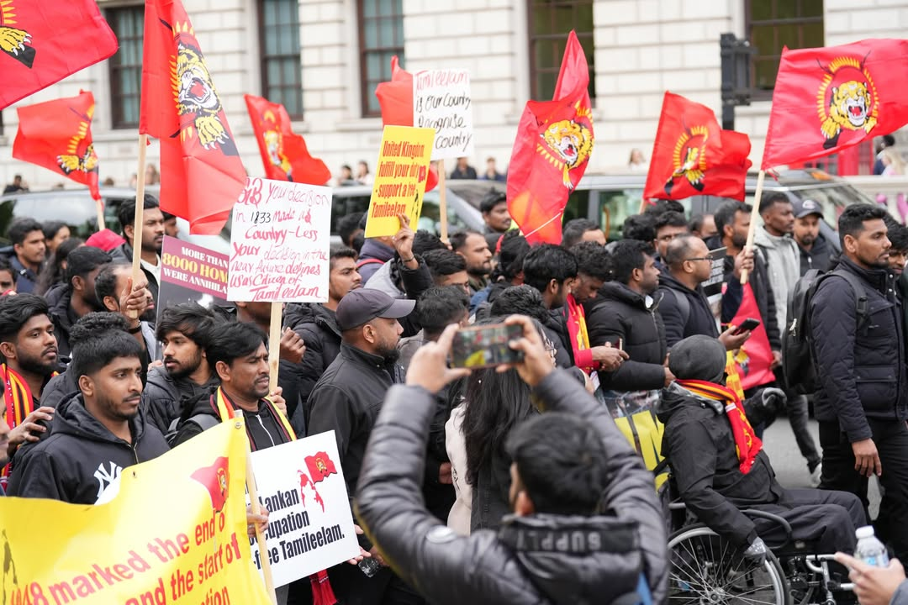
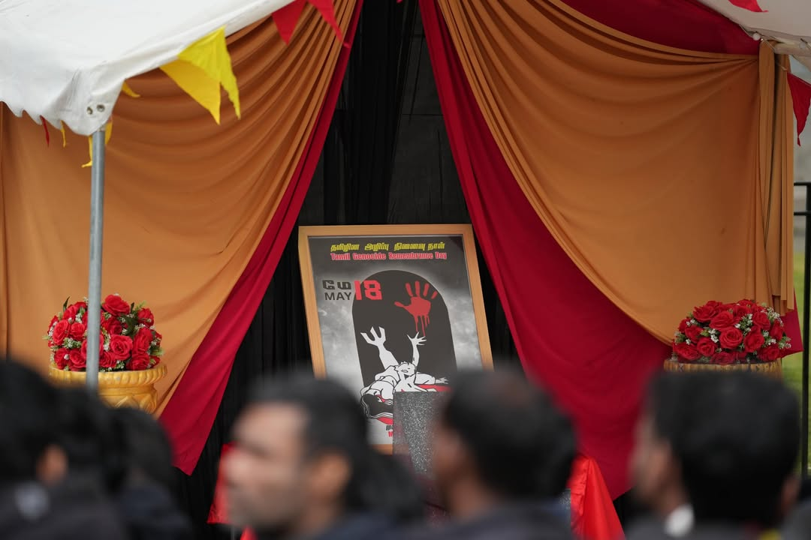
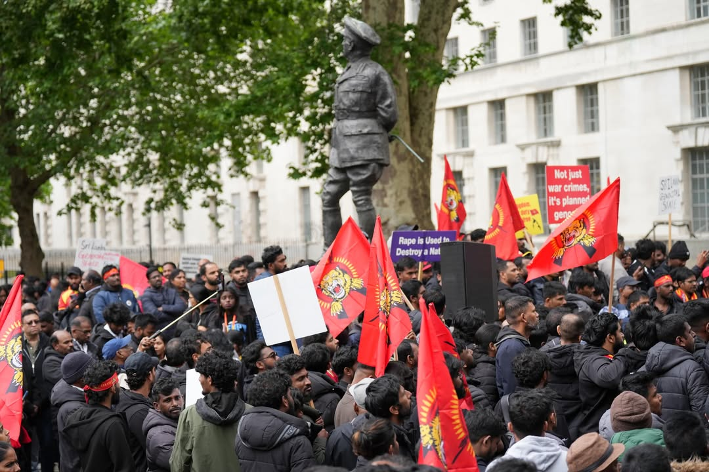
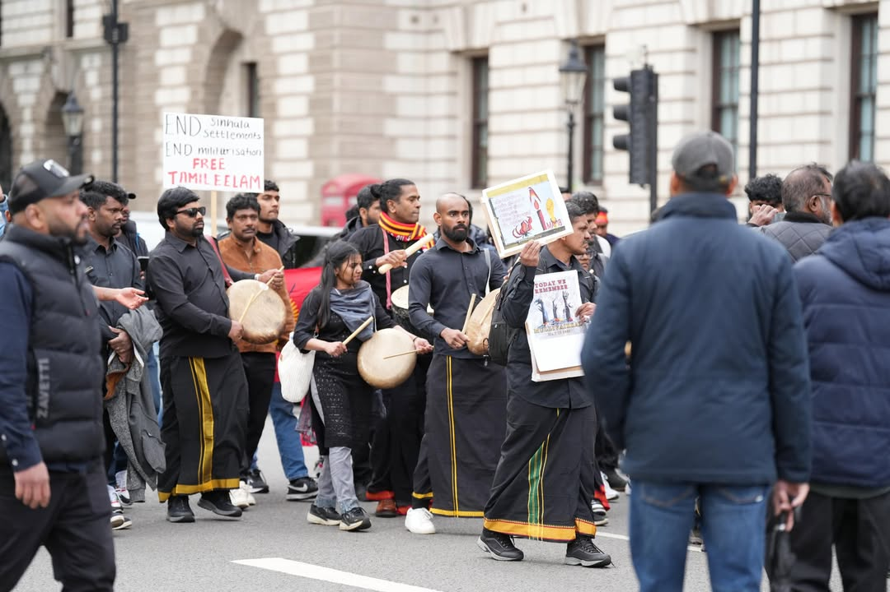
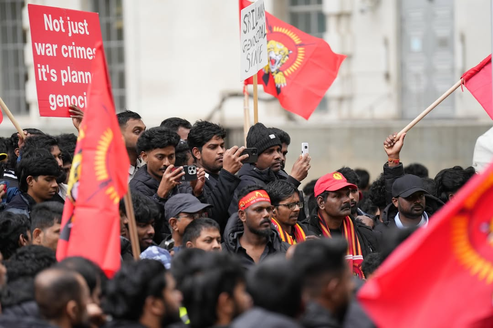

பிரித்தானியத் தலைநகர் லண்டனில் பல்லாயிரக்கணக்கான மக்கள் திரண்ட முள்ளிவாய்க்கால் பேரணி!
📅 மே 2026 | 📍 லண்டன், பிரித்தானியா
முள்ளிவாய்க்கால் தமிழினப் பேரவலத்தின் 17ஆம் ஆண்டு நினைவேந்தல் வாரத்தை முன்னிட்டு, பிரித்தானியத் தலைநகர் லண்டனில் பல்லாயிரக்கணக்கான புலம்பெயர் தமிழ் மக்கள் ஒன்றிணைந்து பிரம்மாண்ட நீதிக்கான போராட்டப் பேரணியை நடத்தியுள்ளனர். தமிழீழத் தேசியக் கொடிகளை ஏந்தியவாறும், முள்ளிவாய்க்கால் கஞ்சியைப் பகிர்ந்துண்டும், இனப்படுகொலைக்குச் சர்வதேச விசாரணை கோரியும் முழக்கங்கள் எழுப்பப்பட்டன. லண்டனின் முக்கிய வீதிகள் வழியாகச் சென்ற இப்பேரணியில் இளந்தலைமுறையினர் பெருமளவில் பங்கேற்றுத் தங்களது தாயக உணர்வை வெளிப்படுத்தினர். பிரித்தானிய நாடாளுமன்றப் பிரதிநிதிகள் மற்றும் மனித உரிமை ஆர்வலர்கள் பலர் இதில் கலந்துகொண்டு, தமிழ் மக்களின் சுயநிர்ணய உரிமைக்கான போராட்டத்திற்குத் தங்களது ஆதரவை உத்தியோகபூர்வமாகப் பதிவு செய்தனர்.
📸 போராட்டக் களத்தின் பிரத்தியேகப் புகைப்படங்கள் (10 Photos)








